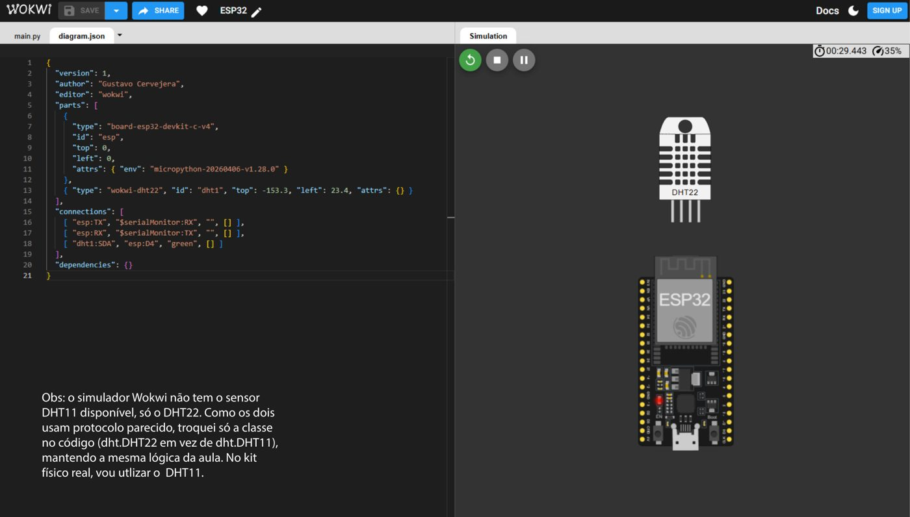

fundamentos de iot · somativas 1 e 2 · pucpr 2026 · 4 min de leitura
Monitor de clima com ESP32: do simulador à montagem
Começou como uma leitura de sensor no simulador e terminou com o kit montado: um ESP32 que lê temperatura e umidade, liga um relé quando passa do limite e manda tudo pra nuvem a cada 20 segundos.
problema
Ler temperatura e umidade, agir quando passa do limite e guardar os dados na nuvem.
meu papel
Programei em MicroPython, testei no simulador e montei o circuito com o kit.
resultado
ESP32 liga o relé sozinho e envia as leituras ao ThingSpeak a cada 20 segundos.
O tema
As duas somativas de Fundamentos de IoT são o mesmo projeto em duas fases. Na primeira, o ESP32 só lia
o sensor, e tudo no Wokwi, um simulador de placas no navegador. Na segunda, montei o kit de verdade, com
ESP32, sensor DHT11 e um relé, programado em MicroPython, e liguei tudo na rede e na nuvem.
Parte 1 · leitura no simulador
01
Preparar o ambiente
O Wokwi não tem o DHT11, que é o sensor do kit da aula, só o DHT22. Os dois usam protocolo parecido, então troquei só a classe no código e mantive a mesma lógica.

etapa 1: ESP32 e DHT22 no Wokwi
02
Configurar o ESP32
A placa subiu o MicroPython sem problema, mas a leitura deu timeout. O erro não era da placa, era da comunicação com o sensor.
etapa 2: firmware rodando e o timeout no console
03
Ler o sensor
Corrigi a fiação, com alimentação no 3V3, dados no pino 4 e terra no GND. A leitura apareceu no console a cada 5 segundos.
etapa 3: leituras chegando no console
main.py
import dht
import machine
import time
d = dht.DHT22(machine.Pin(4))
while True:
d.measure()
print("Temp={} Umid={}".format(d.temperature(), d.humidity()))
time.sleep(5)
A conexão ficou num arquivo separado, o wifi_lib.py: ativa a interface, tenta conectar e espera até dar certo. O programa principal só chama conecta().
05
Ler o sensor
O DHT11 fica no pino 4. A cada ciclo, uma leitura de temperatura e uma de umidade.
06
Decidir e agir
Passou de 31 °C ou de 70% de umidade, o relé no pino 2 liga. Abaixo disso, desliga. É a mesma lógica de uma irrigação que liga quando o solo seca.
07
Mandar pra nuvem
Cada leitura vai pro ThingSpeak numa requisição HTTP, nos campos 1 e 2 do canal, e lá vira gráfico.
08
Não travar no erro
O ciclo inteiro fica num try/except. Se a leitura ou a rede falhar, o programa avisa e tenta de novo 20 segundos depois.
main.py (resumido)
while True:
try:
sensor.measure()
temp = sensor.temperature()
umid = sensor.humidity()
if temp > LIMITE_TEMP or umid > LIMITE_UMID:
rele.value(1)
else:
rele.value(0)
url = "https://api.thingspeak.com/update?api_key={}&field1={}&field2={}".format(API_KEY, temp, umid)
urequests.get(url).close()
except Exception as e:
print("Erro:", e)
time.sleep(20)